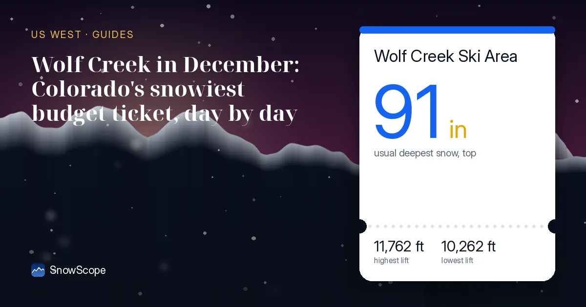
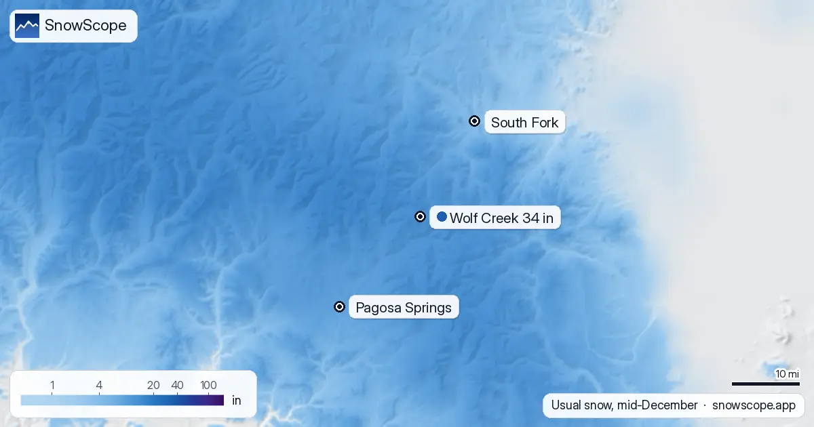

Wolf Creek in December: Colorado's snowiest budget ticket, day by day
Wolf Creek Ski Area sits high on the Continental Divide between Pagosa Springs and South Fork. It charges a fixed price year-round, publishes its rates in advance, and delivers the deepest mid-December snow of three Colorado areas we checked. Here's what a typical December looks like at each height, and when to book to avoid peak pricing.
See the live snow forecast for Wolf Creek Ski Area in the SnowScope appSnow depth, powder alerts and the 3D map, free.
Three heights, three snow stories
Wolf Creek stretches from 10,260 ft (3,128 m) at the base to 11,760 ft (3,585 m) at the top, with 11 lifts and about 31 mi (50 km) of runs. The snow depth changes with elevation. On a typical 15 December, the base has 29 in (74 cm), mid-mountain at 11,010 ft (3,356 m) holds 34 in (87 cm), and the top reaches 36 in (92 cm). By New Year's Eve, mid-mountain climbs to 46 in (118 cm) and the top to 50 in (127 cm).
The reliability is high but not perfect. On 15 December, 72 % of winters have 20 in (50 cm) or more at mid-mountain. Good-snow weeks, which SnowScope defines as a weekly mean of 20 in or more, appear in 59 % of winters in the first week of December but in 78 % of winters by the week of Christmas. When storms bypass the San Juan mountains, the whole pass feels it: a lean December, one in ten, can have only 5 in (12 cm) on the 15th.

When to visit and what it costs
Wolf Creek's 2026-27 ticket prices are fixed and printed: $96 on regular days, $110 on peak days. In December, peak days run from 20 to 23 December and 26 to 31 December. That means you save $14 per ticket if you ski before 20 December, or on Christmas Eve or Christmas Day.
Multi-day passes offer better value for longer trips. A 2-day pass costs $192 on regular dates or $220 on peak dates. A 3-day pass is $285 or $327. The cheapest December is therefore anything before the 20th, plus the two days at Christmas itself.

How it compares: Loveland and Ski Cooper
Loveland, on I-70 west of Denver, prices early-season tickets at $60 online through 13 December, then $159 at the window from 14 December onward. Its mid-mountain had 29 in (74 cm) on a typical 15 December, with 67 % of winters above 20 in. Ski Cooper near Leadville is the weekday bargain at $49, rising to $99 on weekends and holidays, and had 26 in (66 cm) at mid-mountain on a typical 15 December, with 70 % of winters above 20 in.
Wolf Creek is the snowiest of the three on our numbers at mid-mountain, and the only one with a fixed price all season. It sits higher and farther from Denver: you pay more in drive time, but fewer people and deeper snow are the trade.
December was warmer in past winters
Early December used to be deeper. In the first 15 winters of our record, mid-mountain had 55 in (140 cm) on a typical 15 December. In the last 15 winters, that dropped to 24 in (60 cm), and the share of winters above 20 in fell from 87 % to 67 %. Last winter was very lean on that date: only 9 in (23 cm).
The trend is clear but not absolute. Mid-December and later in the month still hold up well. By 25 December, the typical depth is 42 in (107 cm) at mid-mountain, and by New Year's Eve it reaches 46 in (118 cm). The best week in a typical winter is the last week of the year, with depths around 46 to 50 in at mid and top elevations.
What to know before you go
Wolf Creek Pass (US-160) is high, steep, and unforgiving. Winter driving requires chains or four-wheel drive and weather awareness. Check the Colorado Department of Transportation website before you leave. The pass is closed occasionally in heavy snow, and conditions can change fast.
There is no on-mountain lodging. The nearest towns are Pagosa Springs (25 mi / 40 km south) and South Fork (15 mi / 24 km north). Most visitors drive up for the day. At over 10,000 ft elevation, pace yourself on the first day and drink water to adjust to the altitude. Early season snow can be thin; rocks may be close beneath shallow cover.
Tips for skiers
- Ski before 20 December to lock in the $96 regular price instead of $110.
- Book a 2- or 3-day pass if you can; the per-day cost falls to $96 or $95 per day on regular dates, matching or beating single-ticket prices.
- Plan for mid-mountain at 11,010 ft or higher; the base at 10,260 ft can be thin early in the season.
- Carry chains or use four-wheel drive; check CDOT conditions and road status before driving Wolf Creek Pass.
- Take the first day easy at this altitude; drink water and avoid overexertion to adjust to over 10,000 ft.
About these numbers
Resort snow depths are the deepest snow on the resort's upper slopes on the date shown; they are estimates for an area, not a measurement at one point. Forecasts can change. Always read the official avalanche bulletin before going off-piste.
Official avalanche bulletins: Colorado Avalanche Information Center
Cite this report
For research, teaching or the press: the numbers and charts are free to reuse under CC BY 4.0 with this citation.
SnowScope (2026), Wolf Creek in December: Colorado's snowiest budget ticket, day by day, https://snowscope.app/blog/en/2026/11/wolf-creek-colorado-december-skiing-value.html, accessed 2026-11-14
SnowScope (Atlas Labs). (2026, November 14). Wolf Creek in December: Colorado's snowiest budget ticket, day by day. SnowScope snow reports. https://snowscope.app/blog/en/2026/11/wolf-creek-colorado-december-skiing-value.html
BibTeX
@misc{snowscope2026wolfcreekcoloradodecembe,
author = {{SnowScope (Atlas Labs)}},
title = {Wolf Creek in December: Colorado's snowiest budget ticket, day by day},
year = {2026},
month = nov,
howpublished = {\url{https://snowscope.app/blog/en/2026/11/wolf-creek-colorado-december-skiing-value.html}},
note = {Published 2026-11-14 16:17 UTC; accessed 2026-11-14}
}· CC BY 4.0 · Methods, data and tools →
Wolf Creek Ski Area: snow and temperature by height, this winter vs last (tools) →
Follow Wolf Creek Ski Area
Free: a message when fresh snow is coming, and the forecast every morning.
More snow reports

Telluride has 39 inches today. Peak snow weeks historically arrive in late December and March, not November.

Telluride's mid-slopes show 9 in (24 cm), running 92 percent of the seasonal average for mid-November. Saturday's system adds 5 in (13 cm) mostly above 10,000 ft.

Telluride holds 115 cm (45 in) on 8 November. The freezing level climbs to 4,280 m (14,042 ft) on 9 November, bringing rain-on-snow risk to the highest slopes.